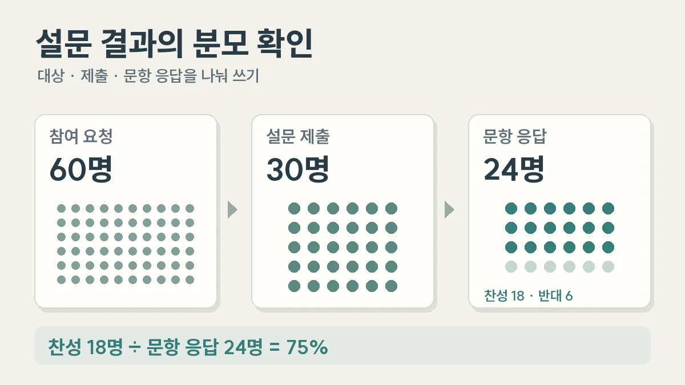

설문 찬성 75%, 누구의 의견일까? 조사 대상·응답자·무응답 쓰는 법
설문에 찬성이 많아도 학생 전체의 의견이라고 쓸 수 있을까요? 참여 요청 대상·제출자·문항 응답자를 나누고, 같은 찬성 18명이 분모에 따라 75%·60%·30%가 되는 가상 집계로 무응답과 일반화의 한계를 확인합니다. 수정 전후 문단과 응답 흐름 메모를 제공합니다.

설문 결과에서 찬성이 75%였습니다. 그래서 결론에 “우리 학교 학생 대부분이 찬성했다”고 썼습니다. 그런데 설문 링크는 두 학급에만 보냈고, 그중 절반만 제출했습니다. 이때 먼저 고칠 것은 ‘대부분’이라는 낱말보다 그 비율이 누구의 응답을 나눈 값인지입니다.
이번 칼럼은 설문 결과를 쓸 때 말하고 싶은 대상, 참여를 요청한 대상, 실제 응답자와 문항별 응답자를 구분하는 방법을 다룹니다. 지난 설문 문항 칼럼이 배포할 문장을 고쳤다면, 이번에는 배포 경로와 빠진 응답이 결론의 범위를 어떻게 제한하는지 살펴봅니다. 설문을 새로 하라는 뜻은 아닙니다. 이미 모은 자료와 배포 기록을 옆에 두고 읽어 보세요. 과제의 조사 조건과 학교 안내가 먼저입니다.
‘학생들’이라고 쓰기 전에 세 범위를 적습니다
미국 여론조사학회 AAPOR는 연구하려는 전체 집단과 표본을 뽑는 데 쓰는 목록·연락 정보를 구분하고, 무작위 방법으로 뽑는 확률표본과 자발적 참여 등으로 모이는 비확률표본을 나눠 설명합니다.[1] 이를 학교 보고서에 적용해 아래 세 줄부터 적어 보세요.
- 말하고 싶은 대상: 어느 학교의 어느 학년, 어떤 조건의 학생인가? 이것이 이번 질문에서의 모집단입니다. ‘청소년 전체’와 ‘우리 학교 두 학급’은 다릅니다.
- 참여를 요청한 대상과 경로: 누구에게 어떤 공지·모임·연락 경로로 설문을 알렸는가? 이 범위가 말하고 싶은 대상을 얼마나 덮는지 확인합니다.
- 실제로 들어온 응답: 제출한 사람은 몇 명이며, 지금 분석하는 문항에 답한 사람은 몇 명인가? 제출했다고 모든 문항에 답한 것은 아닐 수 있습니다.
동아리 대화방에 링크를 올리고 원하는 사람만 답했다면, ‘학생을 무작위로 선정했다’고 쓰지 않습니다. 온라인이라는 형식만으로 표집 방식이 정해지는 것도 아닙니다. AAPOR는 온라인 조사에도 확률표본과 비확률표본이 모두 가능하다고 설명합니다.[1] 어떤 프로그램을 썼는지보다 누구를 어떤 절차로 골랐는지를 기록해야 합니다.
설문을 다 모은 뒤에야 배포 경로의 한계를 발견했다면, 없던 무작위 추출 절차를 덧붙일 수는 없습니다. ‘접근 가능한 두 학급에 참여를 요청했다’처럼 실제 한 일을 쓰고 결론의 범위를 줄이세요.
가상 집계: 75%는 누구 가운데 75%일까요?
다음 숫자와 문장은 편집팀이 만든 교육용 가상 예시입니다. 실제 학교 설문이나 학생의 수행 결과가 아닙니다. 한 학교의 두 학급 재적 학생 60명에게 학급 공지로 설문 참여를 요청했고, 서로 다른 학생의 제출 30건을 받았다고 가정합니다. 질문은 “도서관 점심시간 연장 운영안에 찬성하나요?”이며, 찬성·반대 중 하나를 고르거나 응답하지 않을 수 있었다고 둡니다.
- 참여를 요청한 대상: 두 학급 학생 60명. 공지를 실제로 읽었는지는 확인하지 못했습니다.
- 설문 제출: 30명. 제출하지 않은 학생은 30명입니다.
- 해당 문항: 찬성 18명, 반대 6명, 빈칸 6명. 문항에 답한 학생은 24명입니다.
- 문항 응답자 중 찬성 비율: 18÷24×100=75%.
- 전체 제출자 중 찬성을 표시한 비율: 18÷30×100=60%. 이때는 빈칸 6명도 분모에 들어갔다는 설명이 필요합니다.
- 참여 요청 대상 중 확인된 찬성의 비율: 18÷60×100=30%. 나머지 학생 모두가 반대했다는 뜻은 아닙니다.
세 계산은 모두 맞지만 답하는 질문이 다릅니다. 연장안에 대한 찬반 응답을 소개하려면 “문항 응답자 24명 중 18명(75%)이 찬성했다”고 씁니다. 이어서 전체 제출 30건 중 이 문항의 빈칸이 6건이었다는 사실을 남깁니다. ‘전체 제출자 30명 중 75%’라고 쓰면 분모와 비율이 어긋납니다.
빈칸은 반대가 아닙니다. 설문을 제출하지 않은 30명과 제출했지만 이 문항을 비운 6명도 나눠 기록하세요. 앞의 경우는 설문 전체의 무응답이고 뒤의 경우는 문항 무응답입니다. 다른 문항에서는 유효 응답자 수가 달라질 수 있으므로, 표마다 분모를 다시 확인합니다. ‘모르겠다’라는 선택지를 실제로 골랐다면 빈칸과 합치지 말고 그 응답도 따로 보여 주세요.
알 수 없는 36명의 의견을 채워 넣지 않습니다
이 가상 자료에서는 제출하지 않은 30명과 해당 문항을 비운 6명, 합계 36명의 찬반을 모릅니다. 모르는 의견을 모두 반대라고 놓으면 두 학급 전체의 찬성은 18명, 30%입니다. 모두 찬성이라고 놓으면 54명, 90%입니다. 이미 반대를 고른 6명은 그대로 두고 계산한 값입니다.
30%에서 90%는 실제 찬성률의 추정치나 통계적 신뢰구간이 아닙니다. 응답하지 않은 사람에 관한 정보가 없을 때, 가능한 극단을 계산해 본 범위입니다. 두 학급 전체에서 과반이 찬성하는지조차 이 집계만으로 확정할 수 없다는 것을 보여 줍니다. 더구나 설문을 보내지 않은 다른 학급의 의견까지 이 범위로 설명할 수는 없습니다.
AAPOR의 Standard Definitions 소개는 응답률만으로 무응답 오차의 유무나 크기를 판단할 수 없다고 설명합니다. 응답자와 비응답자가 조사 목적과 관련된 면에서 다를 때 무응답 문제가 생길 수 있다는 것입니다.[2] 따라서 ‘절반만 제출했으니 결과가 반드시 틀렸다’도, ‘응답을 많이 받았으니 대표성이 확보됐다’도 이 자료에서 바로 내릴 결론은 아닙니다.
예를 들어 평소 도서관을 자주 이용하는 학생이 더 적극적으로 참여했을 가능성을 생각할 수는 있습니다. 하지만 그 가능성을 실제 원인으로 쓰려면 추가 정보가 필요합니다. 이번 가상 자료에는 이용 빈도별 응답 분포가 없으므로 “도서관 이용자가 많이 응답해 찬성이 높아졌다”고 확정하지 않습니다.
수정 전후: 학교 전체의 의견에서 확인한 응답으로
수정 전 · 가상 초안
학생 60명을 대상으로 설문한 결과 75%가 연장 운영에 찬성했다. 대부분의 학생이 원하므로 우리 학교는 점심시간 도서관 운영을 늘려야 한다.
60명은 참여를 요청한 대상인데 응답자처럼 쓰였고, 찬반에 답한 사람은 24명이라는 사실이 사라졌습니다. 두 학급을 학교 전체로 넓혔으며, 찬반 의견만으로 인력·안전·운영 가능성까지 판단했습니다.
수정 후 · 가상 자료로 쓴 결과·한계 문단
두 학급 학생 60명에게 학급 공지로 참여를 요청했고, 서로 다른 학생의 설문 30건을 받았다. 연장 운영안 문항에는 24명이 답했으며, 찬성 18명(75%), 반대 6명(25%)이었다. 제출 30건 가운데 해당 문항의 빈칸은 6건이었고, 설문을 제출하지 않은 학생은 30명이었다. 이 결과는 해당 문항 응답자에게 찬성이 더 많았다는 뜻이다. 자발적으로 참여한 두 학급의 응답이므로 두 학급 전체나 학교 전체의 찬성 비율로 일반화하지 않는다. 운영 확대를 제안하려면 운영 인력과 실제 이용 가능 시간은 별도로 확인해야 한다.
수정 후에도 75%라는 결과는 남아 있습니다. 바뀐 것은 그 숫자가 설명하는 대상입니다. 학교 양식이 결과와 논의를 구분한다면 앞의 집계는 결과에, 일반화의 한계와 추가 확인은 논의에 나누어 두세요.
제출 비율을 쓰려면 분모를 아는지 먼저 확인합니다
가상 사례에서는 참여를 요청한 60명이 모두 조사 대상에 해당하고 제출 30건이 서로 다른 학생의 것이라고 가정했으므로, ‘참여 요청 대상 60명 중 30명이 제출했다(50%)’고 쓸 수 있습니다. 여기서는 이 값을 참여 요청 대상 대비 제출 비율이라고 풀어 씁니다. 복잡한 조사에서 쓰는 표준 응답률 산식을 계산했다고 주장하는 것은 아닙니다.
반면 링크가 다른 대화방으로 전달됐거나 누가 대상인지 모른 채 공개됐다면, 조회 수나 대화방 인원 수를 분모로 삼아 ‘응답률’을 만들지 마세요. 조회는 같은 사람이 여러 번 할 수 있고, 대화방 구성원 모두가 조사 대상이라고 확인된 것도 아닐 수 있습니다. “공개 링크로 응답을 모집해 제출 건수는 확인했으나 참여 요청 대상 수는 파악하지 못했다”고 기록할 수 있습니다. 중복 제출을 확인하지 못했다면 ‘30명’ 대신 ‘제출 30건’이라고 쓰고 그 한계도 밝힙니다.
학교 탐구에서 응답자를 늘리려고 개인별 미제출 명단을 공개하거나 답을 강요하지 마세요. 새 조사가 필요하다면 담당 교사와 대상·동의·개인정보 처리부터 확인합니다. AAPOR 역시 기관의 개인정보 보호 안내를 따르고 응답자가 문항을 건너뛸 수 있게 하도록 권합니다.[1] 대표성 점검을 이유로 불필요한 이름·건강정보·연락처를 더 모을 필요는 없습니다.
오늘 남길 산출물: 응답 흐름 메모와 결론 한 문장
자신의 설문 결과 옆에 다음 항목을 채우세요. 알 수 없는 수는 지어내지 말고 ‘미확인’으로 남깁니다.
- 원래 말하고 싶은 대상과 실제 참여 요청 범위: ___ / ___
- 요청 경로·기간과 선정 방법: ___
- 제출 인원 또는 건수와 중복 확인 여부: ___
- 이번 문항의 응답·빈칸·모르겠음 등 각 항목의 수: ___
- 본문의 비율: 분자 ___ ÷ 분모 ___ ×100. 그 분모를 택한 이유: ___
- 도달하지 못한 대상과 의견을 모르는 사람: ___
- 고친 결론: ‘___에 답한 ___명 중 ___명(___%)이 ___라고 응답했다. 다만 ___이므로 ___까지는 말할 수 없다.’
마지막으로 제목·표 주석·결론에서 ‘응답자’가 갑자기 ‘학생 전체’로 바뀌지 않았는지 찾으세요. 가상 예시의 숫자와 수행 문장을 자신의 조사처럼 가져오지 않습니다. 아직 설문 전이라면 이 메모를 계획으로 쓰고, 실제 응답 수는 빈칸으로 둡니다. 이 메모는 학생 자신의 보고서를 고치는 도구이며 교사 세특 문장의 대필이나 평가 결과 보장을 위한 형식이 아닙니다.
함께 읽을 글과 참고자료
전체 구성은 탐구보고서 대표 작성 가이드에서, 집계를 그림과 본문으로 옮기는 일은 표·그래프 본문 칼럼에서 이어 보세요. 이번 글은 문항의 표현이나 그래프 모양보다, 참여 경로와 문항별 분모에 맞춰 결론의 대상을 제한하는 일에 역할을 둡니다.
2026년 11월 19일 아래 원문의 관련 항목을 직접 확인했습니다. 조사 방법을 설명하는 학회의 공개 안내를 참고했으며 한국 고교의 공통 양식이나 의무 절차로 제시하지 않았습니다. 두 학급 설문, 집계 수치와 극단 범위 계산, 수정 문단과 메모는 편집팀의 독립적인 교육용 예시이며 실제 조사를 수행한 결과가 아닙니다. Standard Definitions는 웹페이지의 Background 부분을 확인했으며, 연결된 전체 보고서의 응답률 산식까지 검토한 것은 아닙니다.
- [1] AAPOR — Best Practices for Survey Research: Designing Your Sample의 모집단·표집틀 및 확률·비확률표본 구분, 온라인 조사 방식, 응답자 보호 안내를 확인했습니다.
- [2] AAPOR — Standard Definitions (Background): 무응답 효과의 설명과 응답률만으로 오차의 유무·크기를 판단할 수 없다는 설명을 확인했습니다.
이 칼럼은 운영자의 관점과 일반 교육 정보를 담고 있으며 특정 대학 합격이나 평가 결과를 보장하지 않습니다.
함께 볼 글
탐구보고서 쓰는 법: 형식 6요소와 서론·본론·결론 실제 예시NEW
탐구보고서의 기본 구조 6요소와 작성 순서, 한 가지 가상 예시로 완성하는 서론·본론·결론 문장, 하루 30분씩 5일 작성 계획과 수정 기록 방법을 정리한 대표 작성 가이드입니다.
탐구보고서 자기점검 루브릭: 질문·방법·근거·한계로 고쳐 쓰기NEW
대학의 공식 평가표가 아닌 사이트 자체 자기점검 기준으로, 보고서의 빈칸을 찾고 수정 우선순위를 정합니다.